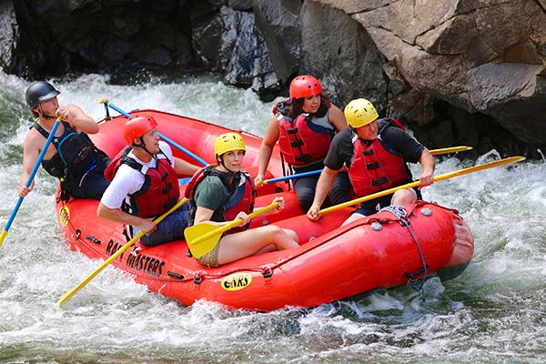
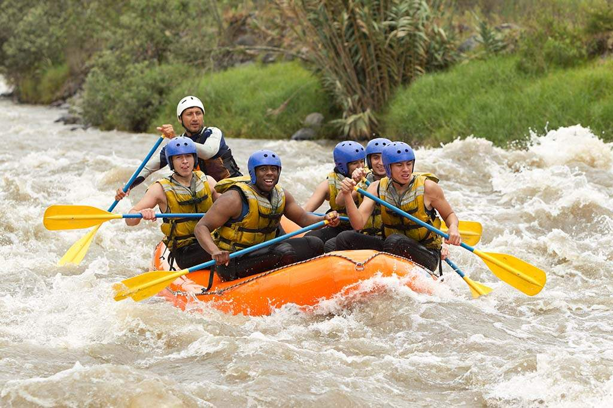
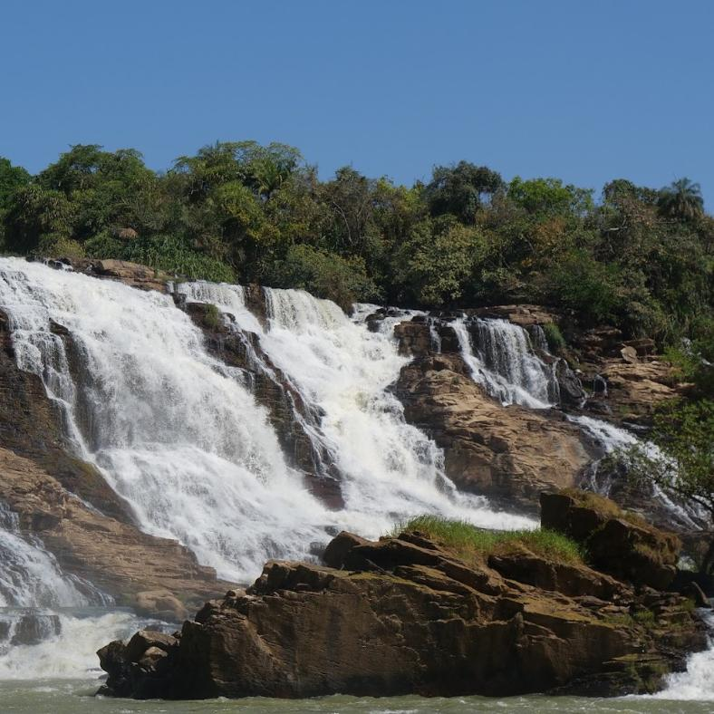
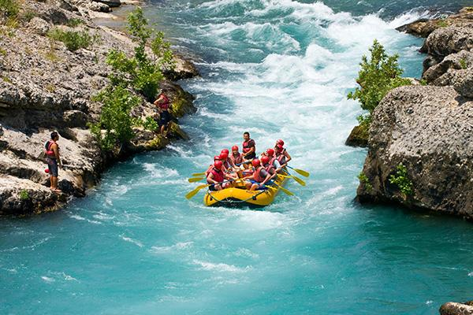

Discover exciting river adventures with Rapids! Choose a trip that suits your experience, enjoy the outdoors, and create unforgettable memories.


Discover exciting river adventures with Rapids! Choose a trip that suits your experience, enjoy the outdoors, and create unforgettable memories.
From beginner-friendly outings to challenging river adventures, we offer experiences for different interests and skill levels.
Have questions or want to plan a group outing?
Contact Us to Plan Your TripDuration: 3–4 hours
Difficulty: Beginner
Enjoy an introduction to rafting with basic paddling instruction, teamwork, and time to appreciate the river scenery. Ideal for first-time participants.

Duration: Half day
Difficulty: Easy
Discover the scenery around Gurara Waterfalls in Niger State. Enjoy nature, photography, and an outdoor experience. Water activities depend on local conditions and safety approval.

Duration: Full day
Difficulty: Intermediate
Take on a more demanding guided adventure focused on paddling, communication, and teamwork. The route should be selected according to participants' abilities and river safety conditions.
| Trip Name | Duration | Difficulty | Suitable For |
|---|---|---|---|
| Half-Day Adventure | 3–4 hours | Beginner | First-time rafters |
| Gurara Nature Adventure | Half day | Easy | Nature lovers |
| Wild Rapids Adventure | Full day | Intermediate | Adventure seekers |
Contact us for trip availability, group arrangements, and further details.
Contact Us